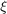
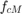
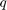
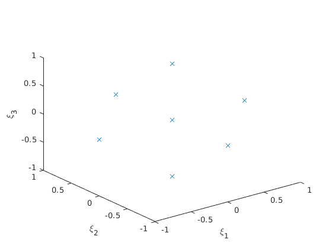
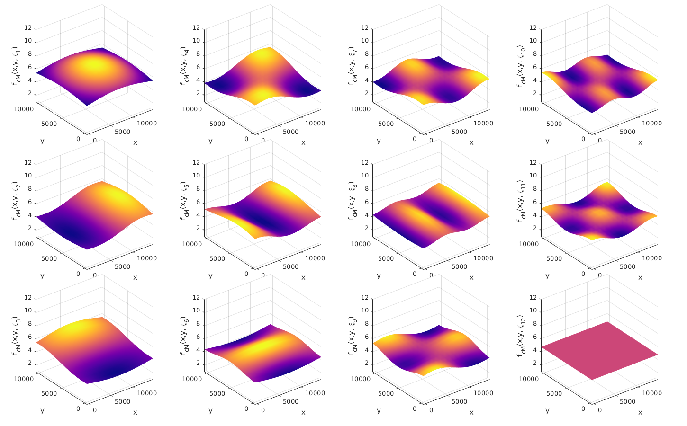

Example 4 -- generate surrogate model by using the KLE of the random field
This example is a continuation of Example 3., where the seperated respresentation was computed.
Contents
- 1) Define prior distribution and map from  to 
- 2) Specify the approximating basis
- 3) Compute the squared norms of the basis polynomials
- 4) Get the integration points and weights
- 5) Map the integration points to the random field of the scaling factor
- plot the f_cm field at the first 12 integration points
- 6) Compute the measurable response
- 7) Evaluate the basis functions at all integration points
- 8) Compute the PCE coefficients
1) Define prior distribution and map from to
see Example 3 for the maps from  to
% The Q is directly defined by the identity map of the germs $\xi$ q2xi = @(q)(q); xi2q = @(xi)(xi); % The map from $\xi$ to $f$ xi2f = @(xi) (q2f(xi2q(xi))); % And its inverse f2xi = @(f) (q2xi(f2q(f)));
2) Specify the approximating basis
% Define multiindex set I = multiindex(L, 1); % Character corresponding to the Hermite polynomials sys_char = 'H'; V_y = gpcbasis_create(sys_char, 'I', I); % number of basis functions M = size(I, 1); % Show basis polynomials display(gpcbasis_polynomials(V_y)) % number of polynomials M = gpcbasis_size(V_y, 1)
12×1 cell array
{'1' }
{'x1' }
{'x2' }
{'x3' }
{'x4' }
{'x5' }
{'x6' }
{'x7' }
{'x8' }
{'x9' }
{'x10'}
{'x11'}
M =
12
3) Compute the squared norms of the basis polynomials
h_alpha = gpcbasis_norm(V_y, 'sqrt', false);
display(h_alpha');
1 1 1 1 1 1 1 1 1 1 1 1
4) Get the integration points and weights
order of 1D integration rule
p_int = 2; % integration points and weights [xi_i_j,w_j] = gpc_integrate([], V_y, p_int, 'grid', 'smolyak'); % sparse grid % number of integration points N = length(w_j); % size of xi size(xi_i_j) % graph the ingegration points in the coordinate system defined by X1, X2, % X3 plot3(xi_i_j(1,:), xi_i_j(2,:), xi_i_j(3,:), 'x') xlabel('\xi_1') ylabel('\xi_2') zlabel('\xi_3')
ans =
11 23
 5) Map the integration points to the random field of the scaling factor
f_cm_k_j = xi2f(xi_i_j);
plot the f_cm field at the first 12 integration points
hff= figure(); hff.Position = [210 65 1450 900]; ha=multiplot_init(3,4); for j=1:12 multiplot colormap(ha(j), 'jet') plot_field(pos, els, f_cm_k_j(:,j), 'colormap', plasma(),'view', 3 ) xlabel('x') ylabel('y') zlabel(strvarexpand('f_{cM}(x,y, \xi_{$j$})')) shading interp zlim([1,12]) end reduce_gap_between_plots(ha, 0.01, 0.05, 0.02, 0.05) % save figure save_png(hff, 'fcm_field_realizations', 'figdir', 'figs', 'res', 600)
6) Compute the measurable response
select internal points
ind = (pos(1,:)>=0 & pos(1,:)<=14000 & pos(2,:)>=0 & pos(2,:)<=10000); y_k_j = call_FEM_solver_with_inhomogenous_field(f_cm_k_j(ind, :));
7) Evaluate the basis functions at all integration points
psi_alpha_j = gpcbasis_evaluate(V_y, xi_i_j); display(psi_alpha_j)
psi_alpha_j =
Columns 1 through 13
1 1 1 1 1 1 1 1 1 1 1 1 1
-1 0 0 0 0 0 0 0 0 0 0 0 0
0 -1 0 0 0 0 0 0 0 0 0 0 0
0 0 -1 0 0 0 0 0 0 0 0 0 0
0 0 0 -1 0 0 0 0 0 0 0 0 0
0 0 0 0 -1 0 0 0 0 0 0 0 0
0 0 0 0 0 -1 0 0 0 0 0 0 0
0 0 0 0 0 0 -1 0 0 0 0 0 0
0 0 0 0 0 0 0 -1 0 0 0 0 0
0 0 0 0 0 0 0 0 -1 0 0 0 0
0 0 0 0 0 0 0 0 0 -1 0 0 0
0 0 0 0 0 0 0 0 0 0 -1 0 1
Columns 14 through 23
1 1 1 1 1 1 1 1 1 1
0 0 0 0 0 0 0 0 0 1
0 0 0 0 0 0 0 0 1 0
0 0 0 0 0 0 0 1 0 0
0 0 0 0 0 0 1 0 0 0
0 0 0 0 0 1 0 0 0 0
0 0 0 0 1 0 0 0 0 0
0 0 0 1 0 0 0 0 0 0
0 0 1 0 0 0 0 0 0 0
0 1 0 0 0 0 0 0 0 0
1 0 0 0 0 0 0 0 0 0
0 0 0 0 0 0 0 0 0 0
8) Compute the PCE coefficients
Computation of the PCE coefficients
upsilon_k_alpha = y_k_j*(diag(w_j)* psi_alpha_j'/(diag(h_alpha)));
% Show PCE coefficients for the 25th assimilation point
k = 25;
display(upsilon_k_alpha(k, :));
Columns 1 through 7
-0.0067 -0.0027 0.0005 0.0007 -0.0004 0.0011 0.0007
Columns 8 through 12
0.0003 0.0004 0.0001 -0.0002 0.0004